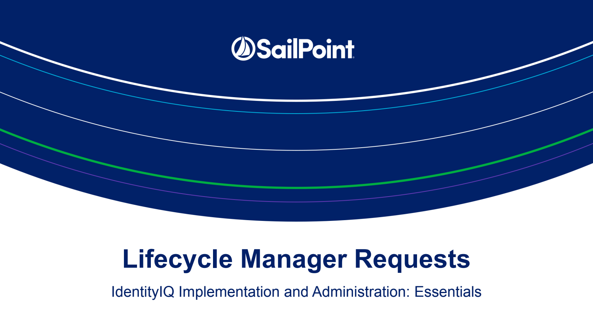
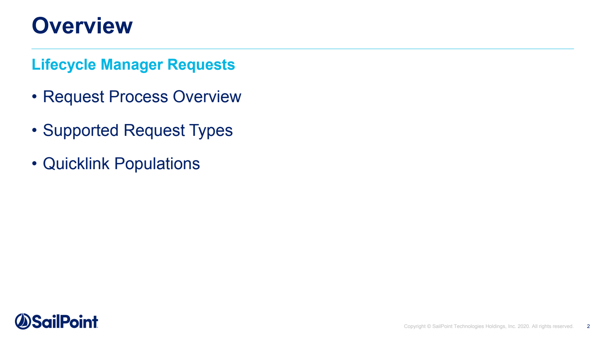
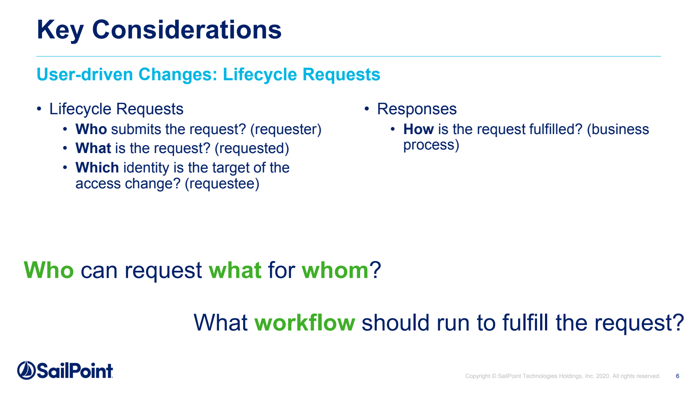
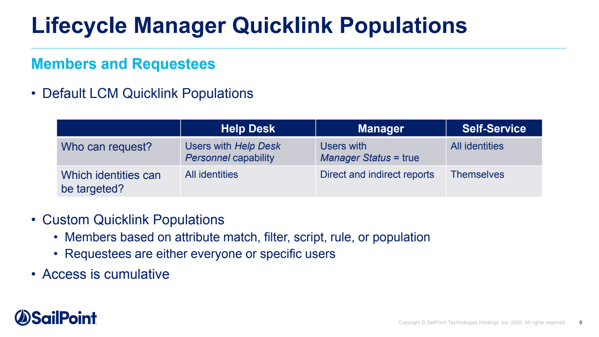
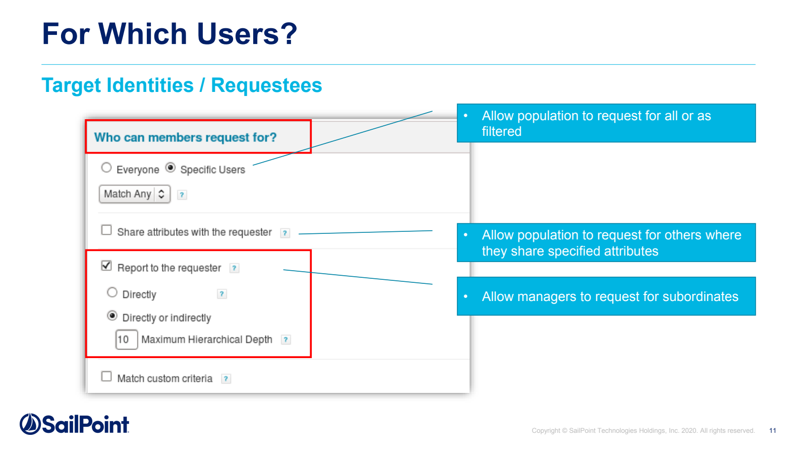
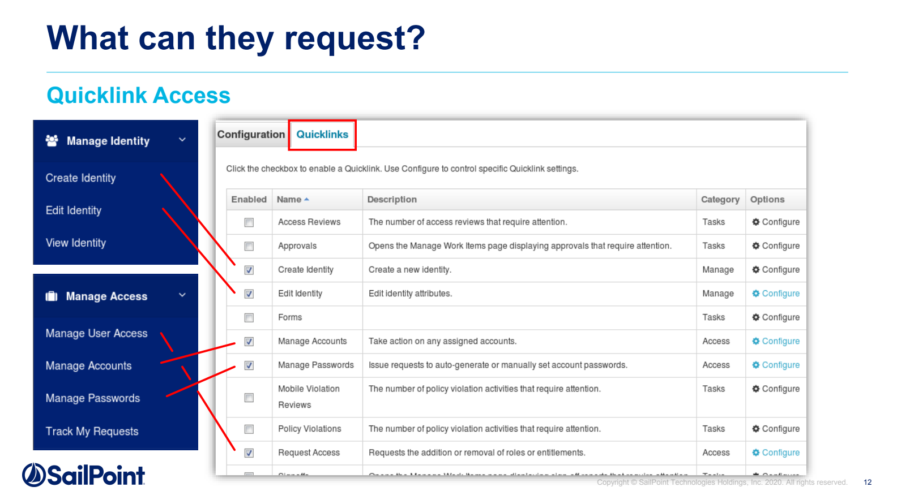
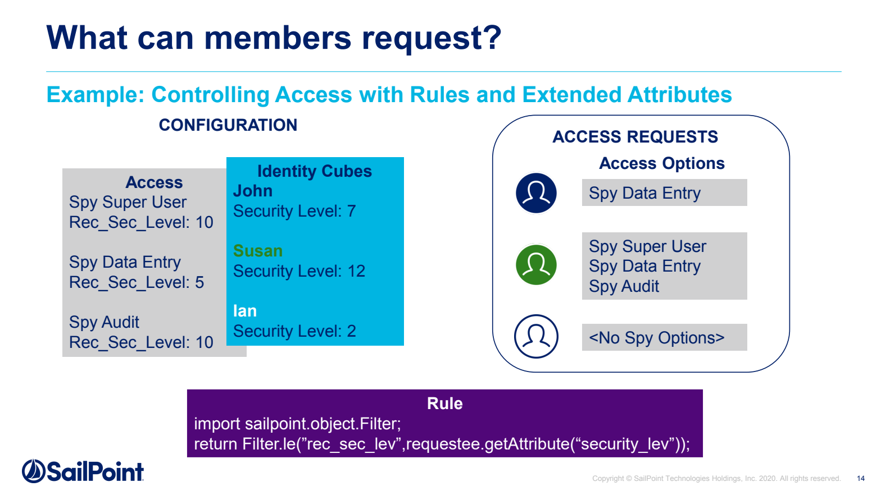

All Essentials modules · Practice companion
25. Lifecycle Manager Requests
Separate requester, requestee and requested item
A request has three distinct subjects: the person submitting it, the identity whose access will change, and the access or operation requested. Configuration must answer who can request what for whom, then select the business process that will fulfill it.
The process diagram begins with requester/requestee filtering, then selection and submission, a provisioning plan and workflow, policy/approval/data collection, and the provisioning engine. The Quicklink menu and cards expose entry points for access, accounts, passwords and identity operations; visibility of a menu item is only one part of the authorization design.






Quicklink populations
A Quicklink Population defines eligible requesters, permitted target identities and enabled request actions. The course's examples distinguish help-desk personnel, managers acting for reports and self-service users acting for themselves. Custom membership can use attributes, capabilities, workgroups, account data, saved populations, scripts or rules. Access is cumulative across the populations that apply to a user.
A population's requestees can be everyone or a filtered set, including reporting relationships or shared attributes. The requester population and the target population are not interchangeable.





Filter the particular access items
Object-filtering rules can constrain available roles, entitlements or applications using requester and requestee context. Revocation can have its own filters. The security-level example compares a requestee's level against each access item's required level, resulting in different choices for different target identities.
When testing these controls, change one dimension at a time: the requester, the target and then the access item. Otherwise a successful request does not reveal which policy actually allowed it. Exercise 4.4 applies these controls to the supplied populations and Quicklinks.



Related practice and source pages
Section Four — overview and contents · Exercise 4.4 — Configure Access Requests